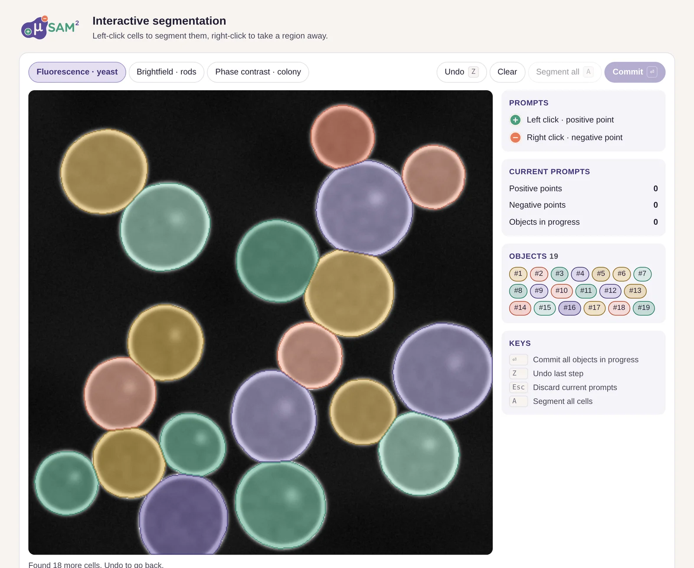

µSAM² click demo
A browser demo that shows how simple annotating cells with µSAM² is. It is a demo, not the real model. Vibe-coded in a single file, dressed in the visual identity I made for the project.

The idea
µSAM² helps researchers segment cells in microscopy images: you click on a cell, and the model draws its outline. Explaining how simple that is takes a paragraph. Trying it takes ten seconds. So I built a demo that runs in any browser, with no installation and no server.
What it is not: the demo does not run µSAM². There is no model behind it. The micrographs are generated in the page and the masks are simulated, so the results say nothing about how well the real model segments. The demo only shows the workflow and how easy it is to use.
How it works
A left click adds a positive point, and each clicked cell becomes its own object with its own colour. A right click takes a region away again. Three synthetic micrographs show the typical cases: fluorescence, brightfield and phase contrast. On a phone, a small switch replaces the right click.
The demo says openly that its images and masks are simulated. It shows how the workflow feels, not what the model computes.
How it was built
I vibe-coded it with AI, from the first sketch to one self-contained HTML file of about 40 KB. My part was the concept, the interaction, deciding what to leave out, and testing every round until clicking a cell felt right.
The look
The visual identity of µSAM² is mine as well: the logo with its mask shape and the plus and minus prompt badges, the colours, the typography and the rules for publication figures. I wrote it down as a design language that AI tools can apply consistently, and the demo uses exactly that system.